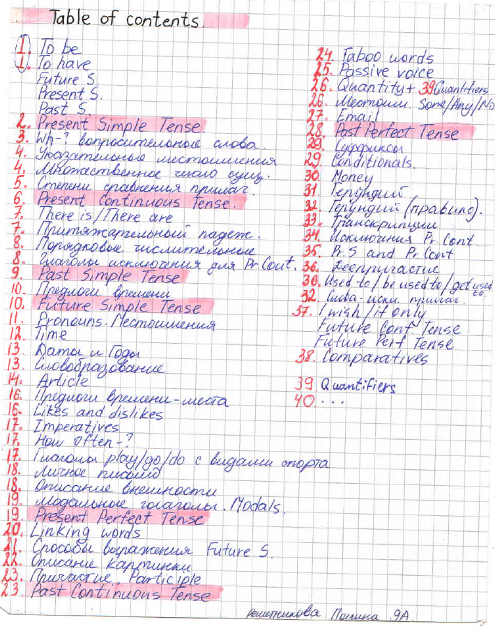

🎓 English Grammar
Добро пожаловать на сайт-тетрадь для изучения английской грамматики.
Автор теории: Куликова Юлия Владимировна
📚 Содержание (Table of contents)
Нажмите на страницу, на которую хотите перейти:
 Страница 1 Страница 2 Страница 3 Страница 4 Страница 5 Страница 6 Страница 7 Страница 8 Страница 9 Страница 10 Страница 11 Страница 12 Страница 13 Страница 14 Страница 15 Страница 16 Страница 17 Страница 18 Страница 19 Страница 20 Страница 21 Страница 22 Страница 23 Страница 24 Страница 25 Страница 26 Страница 27 Страница 28 Страница 29 Страница 30 Страница 31 Страница 32 Страница 33 Страница 34 Страница 35 Страница 36 Страница 37 Страница 38 Страница 39 Страница 40 Страница 41📋 О проекте
Удобный инструмент для изучения грамматики английского языка. Он предназначен для учеников, студентов и всех, кто хочет улучшить свои знания.
Разработчик сайта: Пьянков Никита
Учитель, составивший теорию: Куликова Юлия Владимировна
Ученик, чья тетрадь представлена на сайте: Решетникова Полина